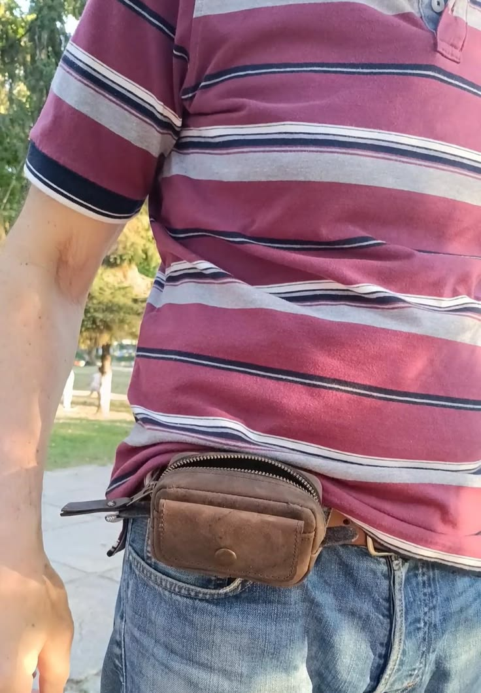

Leather Belt Pouch Wallet, Leather Belt Bag, EDC Belt Pocket Organizer with YKK Zipper, Handmade Card and Key Holder, Gift for him
A handmade full-grain leather EDC belt pouch designed to keep coins, keys and everyday essentials organized and easily accessible.
Price: $55 USD
Buy on EtsyHandmade Leather EDC
Keep everyday essentials close at hand with this handmade full-grain Crazy Horse leather belt pouch. Its compact profile is designed for comfortable, hands-free carry while providing practical space for coins, cash, cards, keys and other small EDC items.
The main compartment closes with a reliable YKK metal zipper and can hold everyday essentials such as cards, cash, coins, a pocket knife or a lighter. A front card slot with a snap closure provides quick access to frequently used items.
Designed to slide onto a standard belt up to 1.96 inches wide (up to 5 cm), the pouch can also be attached to a strap or placed inside a larger bag. The leather’s distressed character is intended to develop a distinctive patina with use. An embossed Alex Polak logo appears on the back, and the pouch arrives in a canvas dust bag, making it a practical gift for him or a useful addition to any everyday-carry setup.
Dimensions: 3.14 inches high × 4.72 inches wide × 1.57 inches deep (80 mm × 120 mm × 40 mm).
Product Details
- Material: Full-grain Crazy Horse leather.
- Dimensions: 3.14 inches high × 4.72 inches wide × 1.57 inches deep (80 mm × 120 mm × 40 mm).
- Belt compatibility: Fits standard belts up to 1.96 inches wide (up to 5 cm).
- Closure: YKK metal zipper on the main compartment.
- Storage: Main zippered compartment for cash, cards, coins, pocket knives, lighters and other small essentials.
- Front storage: Card slot with snap closure.
- Carry options: Can be worn on a belt, attached to a strap or placed inside a larger bag.
- Branding: Embossed Alex Polak logo on the back.
- Packaging: Comes in a canvas dust bag.
Get This Handmade Leather Product
This handmade leather product is available through the LeatherBagsKingdom Etsy shop.
Buy on Etsy